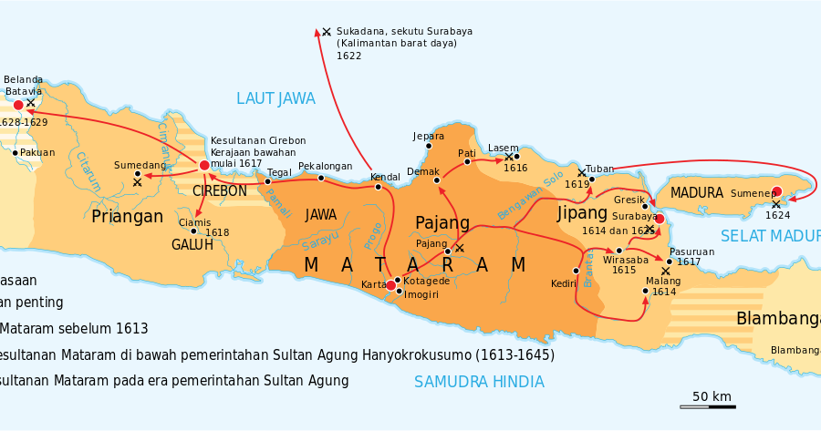
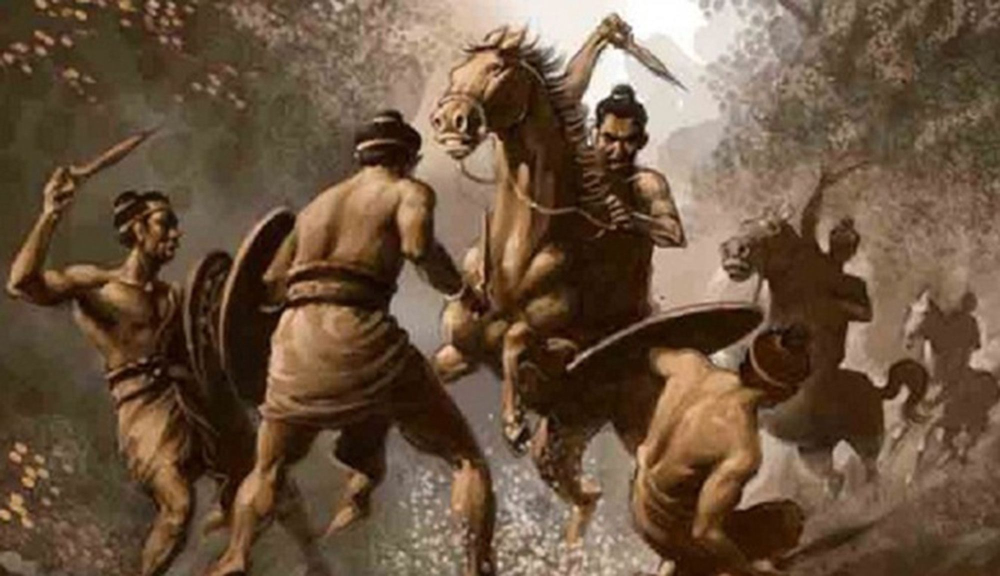
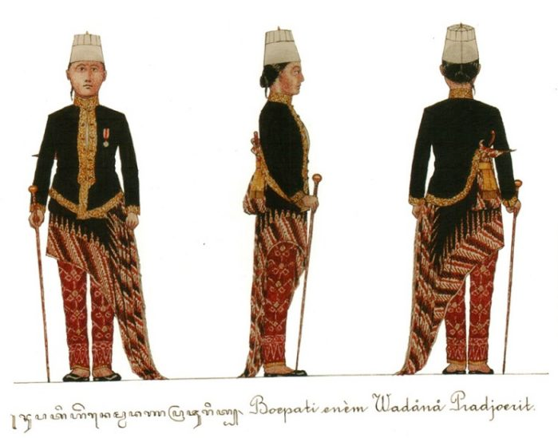
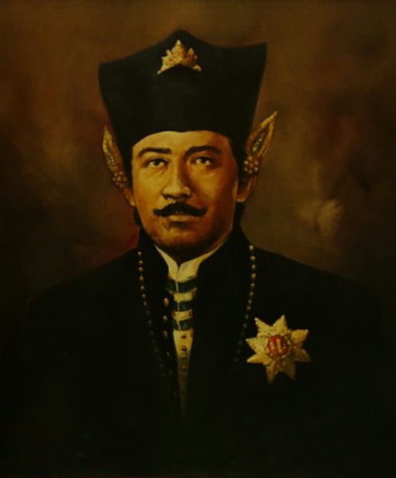

Sejarah Mataram

Kesultanan Mataram adalah kerajaan Islam di Pulau Jawa yang pernah berdiri pada masa zaman ke-17.
Kerajaan
ini dipimpin sebuah dinasti keturunan Ki Ageng Antara dan Ki Ageng Pemanahan, yang mengklaim sebagai
sebuah
cabang ningrat keturunan penguasa Majapahit. Asal-usulnya adalah sebuah Kadipaten di bawah Kesultanan
Pajang, berpusat di "Bumi Mentaok" yang diberikan kepada Ki Ageng Pemanahan sebagai hadiah atas tingkah
laku
baiknya. Raja berdaulat pertama adalah Sutawijaya (Panembahan Senapati), putra dari Ki Ageng Pemanahan.
Kerajaan Mataram pada masa keemasannya pernah menyatukan tanah Jawa dan sekitarnya, termasuk Madura.
Negeri
ini pernah memerangi VOC di Batavia untuk mencegah semakin berkuasanya firma dagang itu, namun ironisnya
malah harus menerima bantuan VOC pada masa-masa penghabisan menjelang keruntuhannya.
Mataram merupakan kerajaan berbasis agraris/pertanian dan relatif lemah secara maritim. Dia meninggalkan
beberapa jejak sejarah yang dapat diamati hingga kini, seperti kampung Matraman di Batavia/Jakarta,
sistem
persawahan di Pantura Jawa Barat, penggunaan hanacaraka dalam literatur bahasa Sunda, politik feodal di
Pasundan, serta beberapa batasan administrasi wilayah yang sedang berlanjut hingga sekarang.
Emitologi

Nama Mataram secara historis adalah nama kerajaan pra-Islam yang mengacu pada Kerajaan Mataram abad
ke-8. Praktik umum di Jawa adalah menyebut kerajaan mereka dengan metonimia dan bervariasi dalam
berbagai bahasa. Ada keragaman bahkan dalam bahasa. Dalam bahasa Sanskerta, Mataram berarti ibu,
sedangkan istilah "Matawis" digunakan sebagai bentuk demonim dan kata sifat.
Berdasarkan sejarahnya, ada dua kerajaan yang pernah ada di periode yang berbeda dan keduanya
disebut Mataram. Kerajaan selanjutnya, sering disebut sebagai Mataram Islam atau Matawis untuk
membedakannya dari Kerajaan Mataram abad ke-8
Struktur Pemerintahan

Mataram memiliki struktur pemerintahan yang dipimpin oleh seorang susuhunan/sultan. Dalam konsep
kenegaraan Jawa raja-raja Mataram disebutkan dengan konsep Keagungbinatharaan atau diungkapkan
sebagai "gung binathara, bahu dhendha nyakrawati" (kekuasaan yang agung, memelihara hukum di muka
bumi). Raja dikatakan "wenang wisesa ing sanagari" (memegang kuasa di negara). Dia harus "wicaksana"
(bijaksana), bersifat "budi bawa leksana, ambeg adil para marta" (meluap budi luhur-mulia dan
bersifat adil terhadap sesama), tugasnya "anjaga tata titi tentreming praja" (menjaga keteratutan
dan ketenteraman negeri), agar tercipta suasana "karta tuwin raharja" (aman dan sejahtera).
Kemasyhuran sultan Mataram telah dikenal sampai tanah Arab sebagai seorang pemimpin para mukmin di
tanah Jawa. Sehingga penguasa Mekah waktu itu memberi gelar Sultan kepada raja Mataram. Inilah awal
mula raja Mataram menggunakan gelar Sultan. Pemakaian gelar raja pada Mataram selain Sultan yaitu:
Panembahan, Susuhunan atau Sunan.
Anyakrakusuma mendapat gelar Sultan. Gelar tersebut dianugerahkan Sultan Murad IV yang diwakilkan
syarif Mekah, Zaid ibnu Muhsin Al Hasyimi. Anyakrakusuma ditahbiskan sebagai Sultan Abdullah
Muhammad Maulana Matarami, disertai kuluk untuk mahkotanya, bendera, pataka, dan sebuah guci yang
berisi air zamzam. Guci yang dulunya berisi air zamzam itu kini ada di makam Astana Kasultan Agungan
di Imogiri dengan nama Enceh Kyai Mendung.
Penguasa
Sultan Agung
Sultan Agung Adi Prabu Anyakrakusuma; lahir di Kutagede, Mataram, 1593 – meninggal di Karta, Mataram,
1645) adalah sultan Mataram ketiga yang memerintah dari tahun 1613-1645. Seorang sultan sekaligus
senapati ing ngalaga (panglima perang) yang terampil ia membangun negerinya dan mengkonsolidasikan
kesultanannya menjadi kekuatan teritorial dan militer yang besar.
Sultan Agung atau Susuhunan Agung (secara harfiah, "Sultan Besar" atau "Yang Dipertuan Agung")
adalah sebutan gelar dari sejumlah besar literatur yang meriwayatkan karena warisannya sebagai raja
Jawa, pejuang, budayawan dan filsuf peletak pondasi Kajawen. Keberadaannya mempengaruhi dalam
kerangka budaya Jawa dan menjadi pengetahuan kolektif bersama. Sastra Belanda menulis namanya
sebagai Agoeng de Grote (secara harfiah, "Agoeng yang Besar").
Atas jasa-jasanya sebagai pejuang dan budayawan, Sultan Agung telah ditetapkan menjadi pahlawan
nasional Indonesia berdasarkan S.K. Presiden No. 106/TK/1975 tanggal 3 November 1975.
Danang Sutawijaya
Danang Sutawijaya atau Panembahan Senapati (1586-1601 M) Setelah naik takhta pada 1586 M, Danang Sutawijaya bergelar Panembahan Senapati Ing Alaga Sayidin Panatagama. Masa pemerintahannya ditandai dengan adanya perang terus-menerus untuk menundukkan para bupati yang ingin melepaskan diri dari kekuasaan Mataram. Seperti contohnya Bupati Ponorogo, Madiun, Kediri, dan Pasuruan. Namun, perlawanan tersebut dapat ditaklukkan, bahkan Cirebon dan Galuh juga ditundukkan pada 1595 M.
Raden Mas Jolang
Raden Mas Jolang atau Sultan Anyakrawati (1601-1613 M) Setelah Panembahan Senapati wafat pada 1601 M, kekuasaan jatuh ke tangan putranya yang bernama Mas Jolang atau Pangeran Seda Krapyak dengan gelar Sultan Anyakrawati. Pada masa pemerintahannya, bupati di Jawa Timur banyak yang melepaskan diri. Mas Jolang berusaha menundukkan pemberontakan tersebut, tetapi sebelum upayanya berhasil dirinya wafat dalam pertempuran di daerah Krapyak. Setelah Mas Jolang wafat pada 1613 M, kekuasaan diteruskan oleh putranya, Raden Mas Wuryah atau Martapura. Namun, Raden Martapura tidak sempat memerintah sehingga diangkatlah putranya, Raden Mas Rangsang, sebagai raja Kesultanan Mataram selanjutnya.